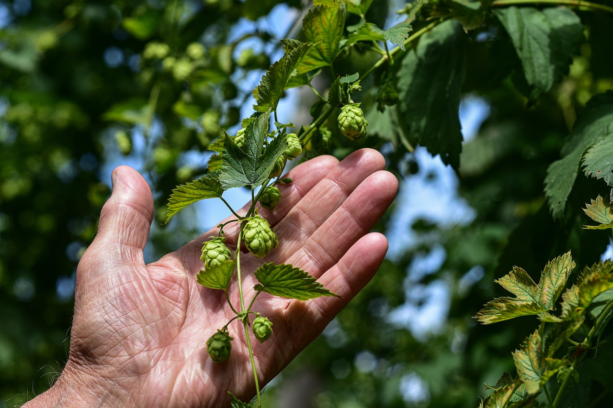
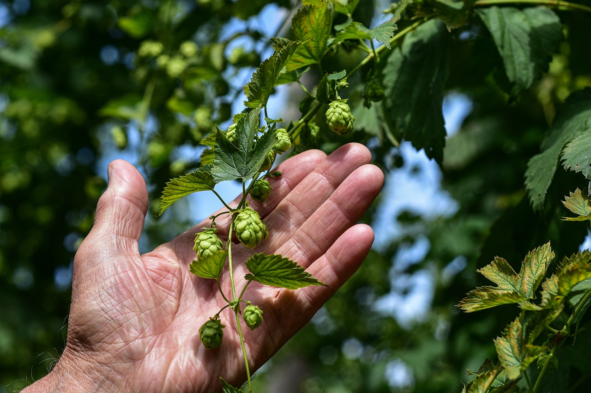

CERVEZA ARTESANAL
La cerveza artesanal se elabora a partir de ingredientes totalmente naturales, que no llevan aditivos artificiales ni conservantes, simplemente agua, levadura, maltas y lúpulos. La diferencia entre una cerveza artesanal y una cerveza industrial se basa en el proceso de elaboración, en la calidad de los ingredientes y en la fórmula del maestro cervecero.
Tipos de Cerveza
Teniendo en cuenta el tipo de fermentación aplicada, las cervezas artesanales se pueden clasificar en dos grandes grupos: Cervezas Ale y Cervezas Lager, las cuales se diferencian en su aroma, sabor, composición color y graduación alcohólica.
Cerveza Lager
Este tipo de cerveza se caracteriza por tener un sabor nítido y ligero y una consistencia espumosa. Las cervezas lager generalmentes son rubias aunque se pueden encontrar en otras tonalidades como negro o ambar. El proceso de fermentación se realiza con temperaturas no muy altas pero por un tiempo más prolongado para finalmente, dejar madurar a una temperatura aproximada de 0ºC por periodos de entre 2 y 6 meses. Según el porcentaje de malta que incluya una cerveza se pueden clasificar en diferentes variantes como:
- Pilsner
- Dunkel
- Rauch
- Vienna
- Bock
Cerveza Ale
Las cervezas artesanales tipo Ale tienen una fermentación a temperaturas mayores que las cervezas tipo Lager (hasta 25ºC). Se caracterizan por ser aromáticas, dulces y de un sabor muy marcado. Algunas cervezas derivadas son:
- Red ale
- Altbier
- kôlsh
- Porter
- Pale ale
- Stout
- Barley
Una vez comentado esto quiero hablar especificamente de 4 cervezas que he preparado y que consideron han sido las mejores en cuanto a sabor y textura:
Bitter:
En esta cerveza la baja densidad, bajo nivel de alcohol y baja carbonatación hacen que esta sea una cerveza de sesión fácil de tomar. El perfil de malta puede variar en sabor e intensidad, pero nunca debe opacar la impresión de amargor general. La tomabilidad es un componente crítico del estilo. El aroma a malta es de bajo a moderado, a menudo (no siempre) con una ligera cualidad a caramelo. Complejidad de malta a pan, bizcocho o ligero tostado son comunes. Leve a moderada frutosidad. El aroma a lúpulo varía de moderado a ninguno, típicamente con carácter floral, terroso, resinoso y/o frutal. Generalmente sin diacetilo, aunque está permitido a bajos niveles. En boca presenta cuerpo ligero a medio-ligero. Baja carbonatación, que puede ser moderada en los ejemplos embotellados. Exhibe color ámbar claro o cobrizo claro. Una cerveza de claridad de buena a brillante. Espuma blanca a blanquecina baja a moderada. Puede tener una espuma de poca altura debido a su baja carbonatación.

American Pale Ale (APA):
Las American Pale Ale o APA son propiamente un estilo de cerveza, caracterizado por ser cervezas de alta fermentación (Ale), rubias (Pale) y elaboradas al estilo americano con lúpulos cultivados allí. Si algo define a las APA es que la presencia del lúpulo está garantizada, lo que equivale a un intenso aroma. Previa a la explosión en popularidad de las IPA, fue tradicionalmente la cerveza artesanal americana más conocida y popular. Típicamente ligera en color, más limpia en sub-productos de la fermentación y con menos sabor a caramelo que su contraparte inglesa. Una Ale pálida, refrescante y lupulada, todavía con suficiente soporte de malta para hacer la cerveza balanceada y bebible. La presencia limpia de lúpulo puede reflejar variedades clásicas o modernas, americanas o del Nuevo Mundo, con un amplio rango de características. Una cerveza artesanal americana pálida de intensidad promedio y orientada hacia el lúpulo, generalmente balanceada para ser más accesible que la moderna IPA Americana.
Summer Blonde:
Las Blonde Ale suelen ser de color amarillo pálido o dorado. Tienen un cuerpo ligero, poco amargor y aroma a lúpulo y algunos toques dulces (debido a la malta). Por eso las Blonde son conocidas como el estilo de cerveza artesanal para iniciarse. El sabor dulce maltoso inicial es suave (por ejemplo, pan, tostado, bizcocho, trigo). Sabores a caramelo típicamente ausentes; si están presentes, son típicamente notas a caramelo pálido. Ésteres frutales de bajos a medios son opcionales, pero bienvenidos. Sabor a lúpulo ligero a moderado (cualquier variedad), pero no debería ser demasiado agresivo. Amargor medio-bajo a medio, pero el balance es normalmente hacia la malta o aún entre malta y lúpulo.
kôlsh:
Una cerveza limpia, fresca, delicadamente balanceada, por lo general con un carácter muy sutil a frutas y lúpulos. Maltosidad suave que se conduce a lo largo hasta un final agradablemente bien atenuado y refrescante. La frescura hace una gran diferencia con esta cerveza, su carácter delicado puede desaparecer rápidamente con el tiempo. Una claridad brillante es característica. Kölsch es una denominación protegida por el Kölsch Konvention (1986) y se limita a 20 o más cervecerías alrededor de Köln. La Konvention simplemente define la cerveza como una "Vollbier” de fermentación alta, clara, ligera, altamente atenuada, con acento en el lúpulo.